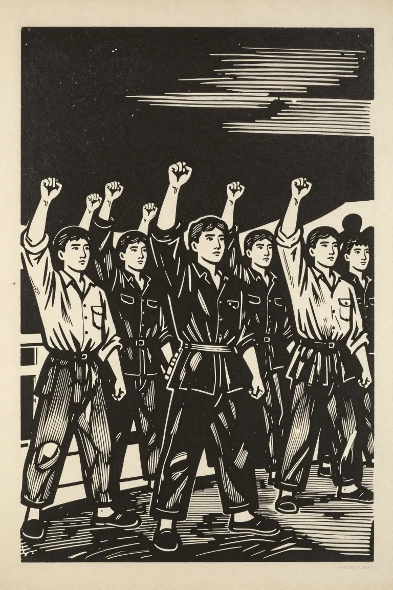

печать · 1931–1960 · также: Движение новой гравюры, 新兴木刻运动, Движение современной ксилографии
В 1931 году Лу Синь призвал молодых художников учиться европейской экспрессионистской ксилографии Кольвиц и Мазереля. Они резали чёрно-белые оттиски на дешёвом дереве и печатали многие на тонкой бумаге, смело и грубо.

Главная идея
Дешёвая доска и один нож способны дать бедной и гневной публике картину её собственной жизни и её борьбы.
Принципы дизайна
Режьте доску сами ножом, чёрной краской по белому или чёрной и одним плоским цветом.
Стройте изображение из тяжёлых чёрных масс и белых линий ножа и держите контраст высоким.
Выбирайте предметом людей: рабочих, крестьян, солдат, толпу, портрет героя.
Режьте линию грубо и угловато, шириной 0,5–2 мм. Оставляйте край ножа видимым.
Допускайте перекрёстную штриховку в тени, но большинство тонов держите массой или белой линией.
Печатайте многие оттиски на тонкой бумаге ручным притиранием ложкой или баренем, чтобы оттиск было дёшево раздавать.
Добавляйте короткую подпись или дату и держите лист достаточно малым для журнальной страницы или стены.
Антипаттерны
Мягкий цветовой градиент или пастельный набор
Растровые точки или фотография
Тонкая нежная декоративная линия
Чистый векторный край без следа реза
Красивый или нейтральный сюжет без социальной мысли